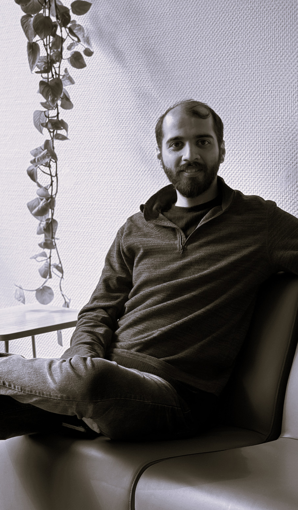

Architecte de formation, je construis aujourd'hui mon profil autour de la coordination BIM, de la modélisation technique et de la gestion de projet.
Passionné de mathématiques et de géométrie depuis le lycée (filière mathématiques-physique, olympiades de mathématiques et d'informatique), j'ai développé très tôt une vision spatiale forte, ce qui m'a naturellement conduit vers l'architecture. Pendant mes études à l'Iran University of Science and Technology, j'ai découvert le plaisir de coder appliqué à la conception — Revit, Rhino, Grasshopper, Arduino — un intérêt qui n'a fait que se renforcer depuis.
Mon expérience sur la raffinerie d'Ispahan m'a permis de comprendre les enjeux réels de l'exécution : interfaces techniques, coordination entre disciplines, suivi des délais, qualité des informations et communication entre les acteurs du projet.
J'aime particulièrement le travail par projet : structurer, planifier et coordonner des équipes jusqu'à la livraison. C'est une aptitude que mon entourage professionnel et universitaire me reconnaît régulièrement, et qui rejoint naturellement mon intérêt sincère pour le BIM — bien au-delà d'une simple reconversion stratégique.
Basé à Nancy depuis 2025, je suis actuellement des cours de français et j'assiste à certains enseignements de l'IAE en parallèle de mes démarches, avec l'objectif d'évoluer vers un poste de Assistant BIM Manager / Coordinateur BIM Junior, en combinant mes compétences en architecture, modélisation 3D, planification et coordination de projet.